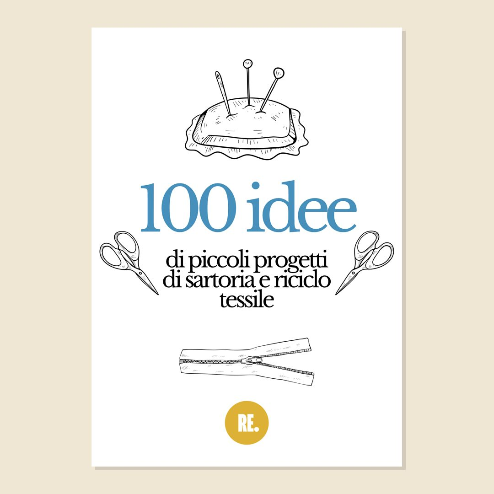
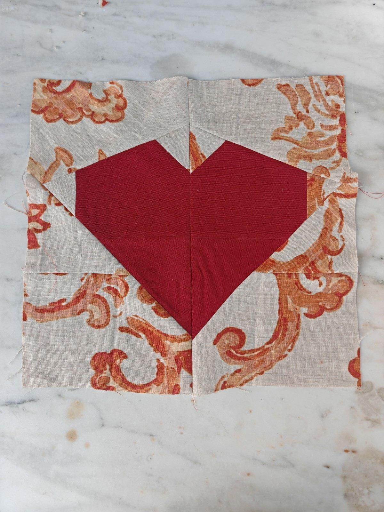

Tabella PDF da stampare
I simboli di lavaggio
Tutti i simboli delle etichette in una pagina: lavaggio, candeggio, asciugatura, stiratura e tintoria, più una guida per leggere le etichette e far durare i vestiti.
Leggi e scarica la tabella →Tabelle da stampare, guide e video tutorial che preparo nel mio laboratorio ai piedi dell'Etna: tutto gratis, per cominciare a dare una seconda vita a vestiti e ritagli. Le guide PDF arrivano con la mia lettera mensile, i video sono liberi su YouTube.
Tabella PDF da stampare
Tutti i simboli delle etichette in una pagina: lavaggio, candeggio, asciugatura, stiratura e tintoria, più una guida per leggere le etichette e far durare i vestiti.
Leggi e scarica la tabella →
Guida PDF
Cento piccoli progetti per vestiti e ritagli, da tenere a portata di mano quando apri l'armadio e non sai da dove cominciare.
Scarica la guida →
Video tutorial
Sul canale YouTube di Repunto spiego passo passo i punti base del ricamo, il patchwork su carta del cuore, il copripiatti in tessuto e come attaccare un bottone che non si stacca più.
Guarda i video su YouTube →
Blog
Come recuperare un maglione infeltrito, dove buttare i vestiti vecchi, cos'è davvero l'upcycling: risposte alle domande che mi fanno più spesso.
Leggi il blog →
Il primo di ogni mese ti scrivo dal laboratorio con un progetto di riciclo tessile, il video gratis e le nuove risorse appena sono pronte. Niente pubblicità, ti cancelli quando vuoi.